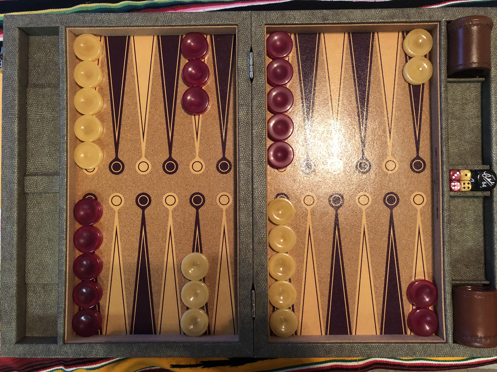
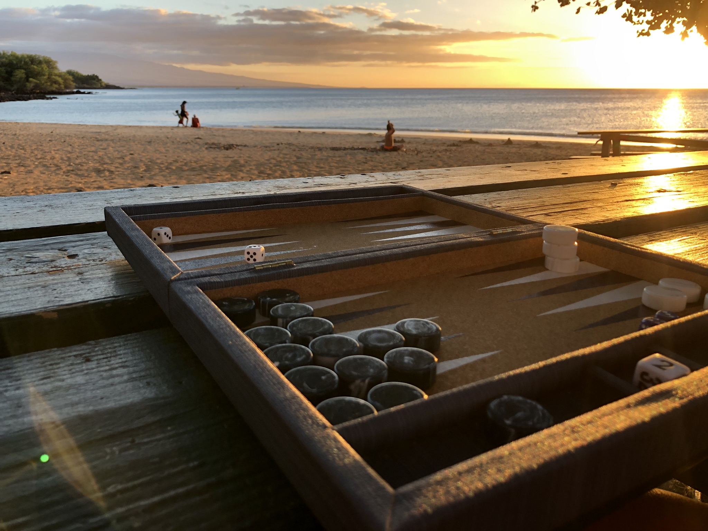
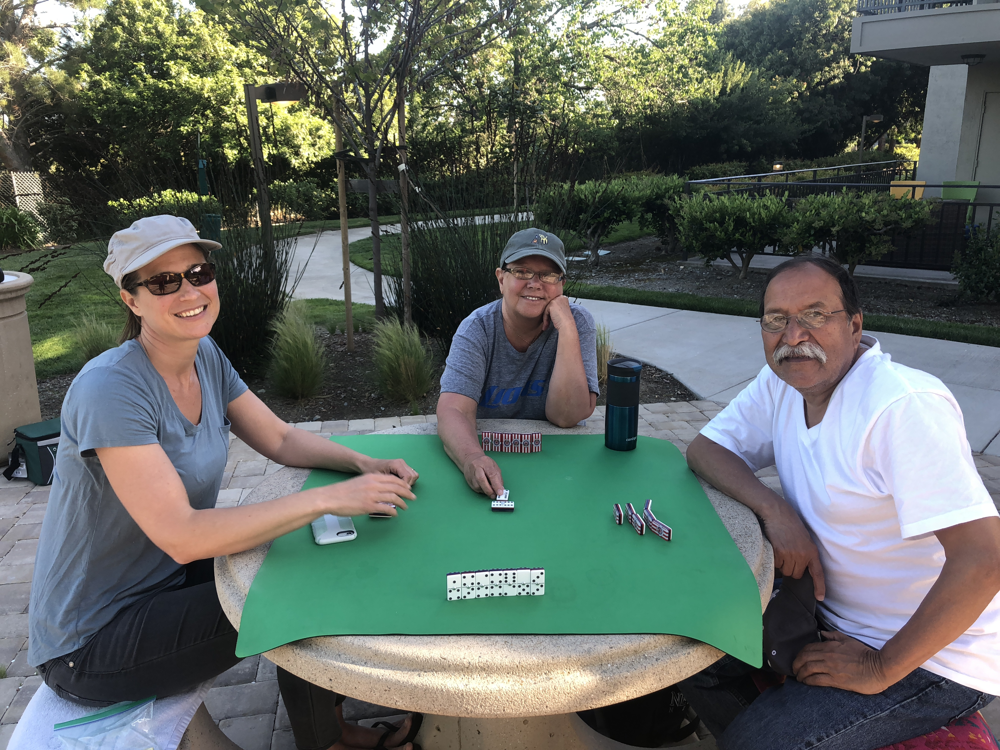
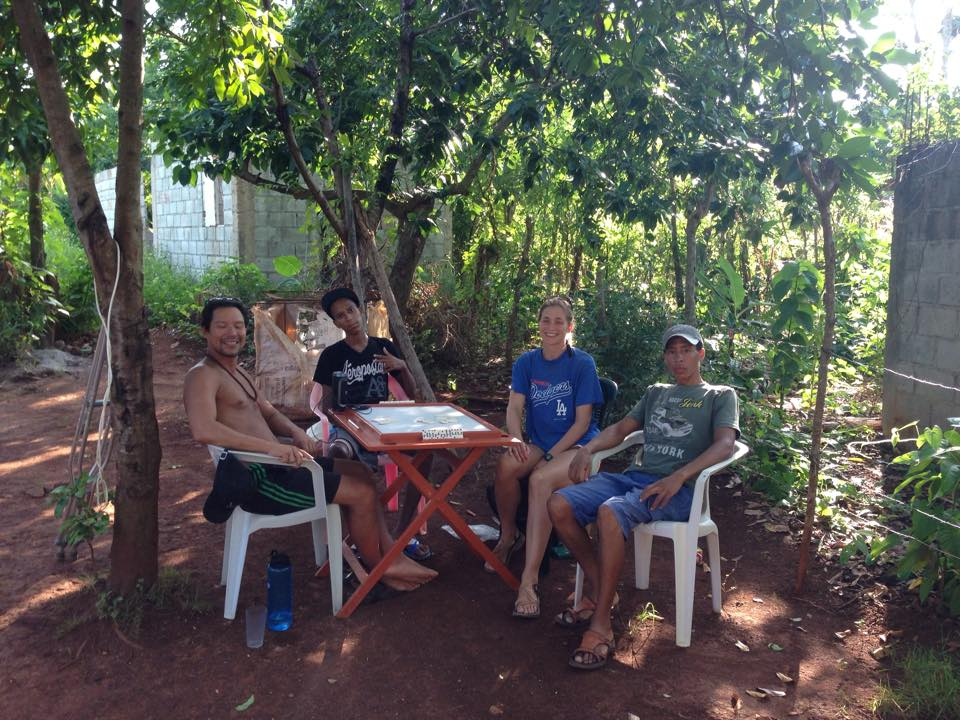
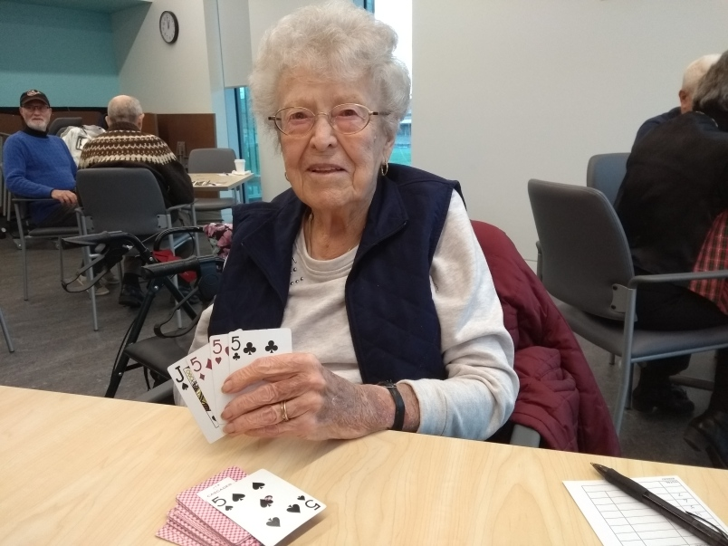

Games
Backgammon
I never played backgammon my entire life until the October 1, 2018, when my wife and I bought our fist board, a Crisloid.

Ever since then backgammon has been my favorite game. For about the first 2 years, I wasn’t even starting the game in the proper fashion. (How Crazy? We rolled a single die to see who would begin, but then that person got to roll a fresh set of dice to start the game.) It wasn’t until January 2020, when my friend, Gene, showed us how to properly start the game. You see, the game starts with each person rolling a single die and the person with the higher die takes that initial roll and makes their first move (if the two die are a tie, you roll again - Therefore it is impossible to start with a double.)Well much has past since then, now I am aware that the opening moves have been studied (and they don’t include doubles). I have also purchased my first 2 backgammon books; Backgammon: From Basics to Badass by Marc Olsen and 501 Essential Backgammon Problems by Bill Robertie.
If you want to learn the game I recommend download the app XG Mobile Backgammon, it has a great Tutor mode that will help you learn by sharing it’s neural net experience (i.e., Equity table for your move and other possible moves).
How about a game of backgammon at the beach?

Dominoes
I have learned to play on dominoes from my trips to Jamaica, Mexico and the Dominican Republic. I love the fact that anyone can play and that everyone is welcome at the domino table. The game is relatively simple (my favorite version is Block Dominoes with No Points), but you do become skilled in the power of observation and learning from what each player has played. There are in fact good and bad domino players - often it just depends are they paying attention or not. I like a fast paced game of dominoes and could really play everyday. Just sit on the beach at a table and invite people over for game after game. I would love to start a dominoes league - where we can meet, play dominoes and listen to roots reggae music!
Some Picture of Domino Games


Tien Gow
I had been a domino player for some time. One day, I was talking to Lou, a sweet man who owned a little convenience store in my apartment complex (Huron Towers) in Ann Arbor, MI. Lou came from China, and somehow the conversation got around to what games he played in China - and he told me about Chinese Dominoes - I bought a set and he explained to me, his memories of playing Pai Gow. He went on to tell me all about his life in pre and post Communist China.
Tien Gow is the original tile (domino) game from China. Tien Gow is played with the same set of dominoes that are used in Pai Gow. Pai Gow is a real fast game, Tien Gow is a little more strategic, sort of like a Chinese version of War. Tien Gow also has the best name for a pair of dominoes, The Supreme Pair (Gee Joon).
Here’s a great description of the game
Cribbage
Cribbage is a fun pegging card game where the players race around the board to 121 points. Cribbage plays well with 2, 3 or 4 player. You basically try to get the maximum points from your hand by obtaining runs, pairs or combination totalling 15. The joy is found in getting a big hand. The maximum possible point in a single hand is 29, which consists of 4 fives and a jack. These hands are rare, when they occur sometimes they even make the news. Check out these articles from Aldergrove, BC and Richmond, BC. Cribbage corner has a stories of people’s 29’s.

Linda Yale, 106, shows off her 29-point hand during a cribbage match at the Minoru Activity Centre. Yale has been playing cribbage for almost 100 years but this is the first time she’s gotten the hand of all hands when it comes to cribbage.